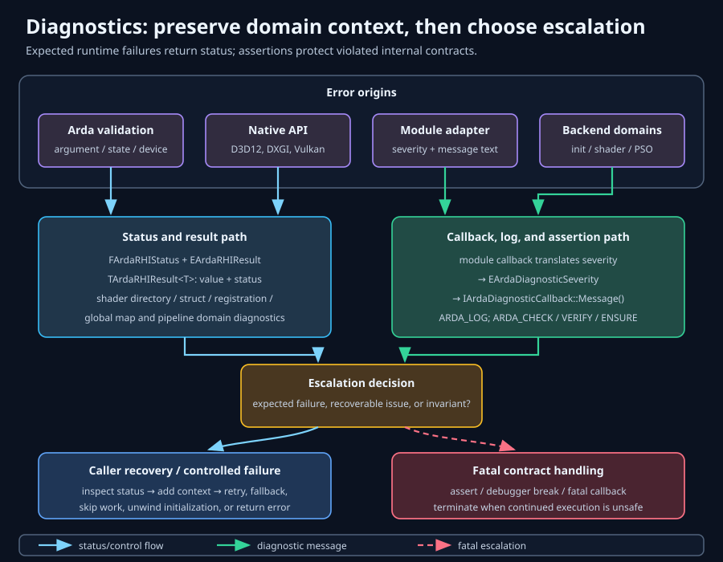

Observe, classify, escalate
Diagnostics
Reliable diagnosis starts by preserving the first failure at the layer that understands it, then adding lifecycle, resource, and platform context without confusing recoverable outcomes with violated invariants.
Learning objectives
After this chapter, you should be able to:
- locate a failure in configuration, RHI status, shader setup, shader-map loading, PSO creation, or native validation;
- choose between ordinary branching, retained diagnostics, logging, ensures, verifies, and fatal checks;
- retain enough context to reproduce failures without keeping temporary pointers;
- reason about GPU faults that appear later than the command that caused them;
- apply a repeatable triage workflow rather than changing several variables at once; and
- design failure-injection, telemetry, cache-statistics, and production reporting policy.
Prerequisites
Read Getting started for configuration and lifecycle, Shaders for directory and registration phases, Pipeline states for cache behavior, and Commands for queue and marker concepts. Engine-hosted integrations should also read External interop so reports preserve provider identity, native descriptor facts, lifetime-token identity, and host queue-coordination evidence.
A layered error taxonomy
A useful taxonomy answers two questions: which layer can explain the failure, and which caller has enough authority to recover? Start at the narrowest failed operation, then escalate outward only when needed.

1. Configuration and lifecycle
ConfigureBackend, initialization, and shutdown operate on process-wide state. Failures include reconfiguration at an invalid time, unavailable runtime or adapter, invalid window bridge, and native device creation failure. Use GetBackendError() immediately after the failed lifecycle call.
EArdaInitializeResult distinguishes success, backend unavailability, and general failure. Preserve that distinction: “try a different supported backend” can be valid for Unavailable, while malformed configuration should be fixed rather than retried.
2. Immediate RHI status and result
FArdaRHIStatus reports operations that do not return a resource. TArdaRHIResult<T> combines status with a value such as a command list, texture, shader, or pipeline. Test the result before touching mValue; retain both the result code and message.
Typical RHI classes are invalid argument, invalid state/order, unsupported capability, wrong-device ownership, native creation failure, and missing resource. These are operation outcomes, not assertion conditions.
3. Shader directories and registration
Shader setup has distinct phases: virtual directory mapping, manifest freeze, type/permutation registration, optional external compilation, persistent sidecar publication, and artifact loading. Compiler diagnostics preserve error code, shader type, backend, permutation, source, output, and captured DXC text. Directory status explains malformed roots and freeze failures; registration failures should include shader type and virtual source, not just “shader failed.”
Check directory configuration before blaming the compiler or native API. A missing virtual-to-physical mapping prevents the system from identifying the intended source long before bytecode creation.
4. Global shader map
FArdaGlobalShaderMap::GetDiagnostics() retains typed failures from the most recent initialization. EArdaGlobalShaderMapError separates registration, invalid device, missing/empty/unreadable bytecode, shader creation, layout creation, and reset-required cases.
Each FArdaGlobalShaderMapDiagnostic can preserve shader type, artifact path, virtual source, physical source, and human-readable message. Export all of those fields while reproducing build/deployment mismatches.
5. Pipeline state creation
FArdaPipelineStateCache::GetDiagnostics() returns retained creation failures. A FArdaPipelineStateDiagnostic records compute/graphics kind, RHI code, normalized descriptor hash, debug name, and message.
Use the descriptor hash to correlate repeated failures and the debug name to identify authored intent. Neither substitutes for logging the framebuffer format, sample count, shader identities, and requesting device when those values determine compatibility.
6. Native validation and device failure
The deepest layer includes D3D12 debug-layer messages, Vulkan validation messages, failed HRESULT or VkResult values, and device-removal or loss information. These often identify synchronization, descriptor, lifetime, or state violations invisible to a backend-neutral status.
Recoverable outcomes versus violated invariants
A failure is recoverable when the caller can choose a documented alternative without corrupting state. An invariant failure means the program has already violated a contract that correct code must maintain.
- Recoverable or expected
- Unsupported optional capability, missing deployment artifact, out-of-date presentation surface, unavailable backend, invalid user-supplied descriptor, cache creation failure, and ordinary I/O failure.
- Programmer invariant
- Using a command list in an impossible lifecycle phase, executing a failed render graph, combining objects from different devices after validation was required, or continuing after internal state corruption.
- Environment-fatal
- Device loss or native runtime failure may make the current rendering session unrecoverable without implying a source-code invariant. Classify it separately so crash policy and telemetry remain accurate.
Use statuses and branch logic for expected failures. Use an ensure to report a suspicious but containable condition. Use a check only when continuing would make behavior misleading or unsafe. Do not turn malformed external input into a process abort merely because it is inconvenient to handle.
Diagnostic channels and their roles
- Status/result
- Synchronous control flow for one operation. It is the first and most precise evidence.
- Backend error string
- Latest process-facade initialization or configuration context. Read it promptly; do not treat it as a historical log.
- Swap-chain error
- Latest error scoped to one
IArdaSwapChain, especially acquire, resize, and present. - Retained subsystem diagnostics
- Shader-map and PSO records with domain-specific fields useful after a compound operation returns.
IArdaDiagnosticCallback- Backend and native validation messages with Info, Warning, Error, or Fatal severity.
- Structured log output
- Process-wide category, verbosity, text, source file, line, and function delivered synchronously.
- Assertions
- Development-time invariant enforcement and recoverable anomaly reporting.
- GPU markers and native captures
- Asynchronous execution context visible in RenderDoc, PIX, validation, or vendor tools.
Validation layers and callbacks
FArdaBackendConfiguration::mbEnableValidation defaults to true. Enable validation during development, automated graphics tests, and pre-release qualification. Validation changes timing and consumes CPU/memory, so profile performance separately with it disabled.
class FBackendMessages final
: public arda::backend::IArdaDiagnosticCallback
{
public:
void Message(EArdaDiagnosticSeverity severity,
const char* text) override
{
// Copy now; the source does not promise retained storage.
queue.Push({severity, text ? text : "", CurrentFrameId()});
}
ConcurrentDiagnosticQueue queue;
};
FBackendMessages messages;
FArdaBackendConfiguration config;
config.mbEnableValidation = true;
config.mMessageCallback = &messages;
if (!ConfigureBackend(config))
return Report(GetBackendError());
// messages remains alive until after ShutdownBackend().The configuration is copied, but mMessageCallback remains caller-owned. Keep it alive for every backend use that can report through it. Copy message text during the callback, avoid throwing, and make the handler safe for the threads on which native validation can call it.
D3D12-specific validation
Use the D3D12 debug layer to catch resource-state, descriptor-heap, command-list, fence, and lifetime misuse. For GPU-based validation or device-removed diagnosis, expect much higher overhead and altered timing. Pair Arda debug names and command markers with PIX or DRED evidence where available.
Vulkan-specific validation
Install the required validation layer and debug callback through the backend configuration path. Vulkan validation is especially valuable for object lifetime, image layouts, access masks, queue ownership, descriptor validity, and semaphore ordering. Availability depends on the installed runtime/layers; production systems may not provide them.
A clean run on one API is not proof of correctness on the other. D3D12 and Vulkan expose different implicit behavior, validation coverage, and timing.
Structured logging and verbosity
FArdaLogRecord carries category, EArdaLogVerbosity, formatted message, source file, line, and function. Categories provide runtime minimum verbosity using an atomic threshold.
ARDA_DEFINE_LOG_CATEGORY(LogRenderer, Log);
void Output(const FArdaLogRecord& record, void* context) noexcept
{
auto& sink = *static_cast<OwnedSink*>(context);
sink.CopyAndEnqueue(
record.mCategory,
record.mVerbosity,
record.mMessage,
record.mFile,
record.mLine,
record.mFunction);
}
SetLogOutput(&Output, &sink);
ARDA_LOG(LogRenderer, Display,
"backend=%s frame=%llu renderer initialized",
ToString(gCurrentBackend), frameId);
// Before sink destruction:
ResetLogOutput();SetLogOutput() installs a process-wide synchronous callback. It may receive recursive logging and must not throw. All text pointers in the record are valid only during the callback. Copy fields before queueing them to another thread.
Verbosity policy
VeryVerbose: high-volume per-resource or per-command details used briefly.Verbose: frame and cache decisions useful during focused investigation.Log: normal subsystem lifecycle and durable diagnostic milestones.Display: operator-visible state changes and important startup information.Warning: degraded behavior or suspicious recoverable conditions.Error: failed operations requiring caller action.Fatal: terminal invariant reporting before termination.Off: category suppression.
Do not log every successful draw or cache hit at production verbosity. Prefer counters for high-frequency events and reserve records for transitions, sampled anomalies, and context-rich failures.
Check, verify, and ensure semantics
Fatal checks
ARDA_CHECK(condition) and ARDA_CHECKF report and terminate when checks are enabled. In builds where checks are disabled, the condition is not evaluated; only sizeof(condition) is formed. Use checks for side-effect-free invariants.
Verify
ARDA_VERIFY(condition) and ARDA_VERIFYF always evaluate the condition. Failure is fatal when checks are enabled; with checks disabled they return the expression’s truth value without fatal reporting. Use verify only when evaluation must happen and failure still represents a development invariant.
Ensure
ARDA_ENSURE(condition) and ARDA_ENSURE_MSGF always evaluate, report failure, and return false without terminating by default. EArdaEnsureBehavior selects Log or Break through SetEnsureBehavior().
Unconditional programmer error
ARDA_CHECK_MSG is an unconditional formatted fatal check. Use it for unreachable internal branches, not for user input or unavailable hardware.
Decision guide
- Can the caller recover? Return status.
- Should execution continue while reporting an anomaly? Ensure and branch on false.
- Must the expression run in every build and represent an invariant? Verify.
- Would continued execution violate internal correctness? Check.
Preserving diagnostic context
A bare “creation failed” message is rarely actionable. Capture the smallest stable context that reconstructs intent without serializing sensitive or enormous state.
- backend type, adapter/device identity, validation state, and build identifier;
- frame number, command queue, queue instance, and command-list debug name;
- resource or pipeline debug name, descriptor hash, dimensions, format, samples, and state;
- shader type, virtual source, physical source, artifact path, extension, and content/build identifier;
- immediate RHI code/message and nearby native validation messages;
- lifecycle phase, operation sequence, and whether resize or shutdown was active.
Copy temporary callback strings. Snapshot retained diagnostic vectors before resetting their owners. Preserve the first failure as primary; secondary cleanup failures belong in a causal chain rather than replacing it.
Debug names are evidence, not identity
Names make logs and captures readable, while descriptor hashes correlate semantically identical PSO requests. Names can be missing or duplicated, and hashes can collide in principle. Use them together with typed fields and call context.
The challenge of asynchronous GPU failure
CPU API calls usually enqueue work; the GPU executes later. A bad descriptor written in frame N may be consumed in frame N+1, and device loss may surface at submission, wait, present, or an unrelated allocation. The reporting call is often the detection point, not the root cause.
Reduce the search interval
- Add
BeginMarker(name)/EndMarker()around passes and major phases. - Assign stable debug names before native object creation.
- Record queue instance numbers and CPU frame identifiers.
- Temporarily reduce frames in flight or insert targeted waits in a diagnostic build.
- Bisect command recording by disabling passes, not by randomly changing synchronization.
- Capture the first validation error; later cascades often describe consequences.
Targeted serialization can localize a fault but is not a fix. Remove diagnostic waits and restore the original schedule after identifying the violated lifetime or synchronization rule.
A systematic debugging workflow
- Freeze evidence. Save the first status, message, validation output, frame/queue identity, and current configuration.
- Locate the layer. Decide whether failure began in configuration, directories, registration, map loading, descriptor validation, PSO creation, submission, or native execution.
- Classify recoverability. Separate expected unsupported/input errors from invariant violations and device-session failure.
- Reproduce minimally. Fix backend, adapter, scene, resolution, shader artifacts, and validation setting. Remove unrelated workloads.
- Validate preconditions. Check lifecycle phase, non-null objects, same-device ownership, capabilities, command-list state, formats, and resource states.
- Read retained diagnostics. Export shader-map and PSO records before reset or teardown.
- Correlate native evidence. Match validation object names and markers to Arda logs and descriptor hashes.
- Bisect one dimension. Disable half the passes, replace one shader, or isolate one queue edge; do not change backend and content simultaneously.
- Prove the cause. Create a test that fails before the correction and passes afterward, including validation output when practical.
- Restore production conditions. Remove diagnostic serialization, restore concurrency, and rerun on both backends.
Worked flow: PSO creation failure
FArdaRHIGraphicsPipelineRef pipeline;
const FArdaRHIStatus status =
cache.GetOrCreateGraphics(initializer, framebuffer, pipeline);
if (!status)
{
ARDA_LOG(LogRenderer, Error,
"PSO request failed code=%u message=%s",
unsigned(status.mCode), status.mMessage.c_str());
for (const auto& diagnostic : cache.GetDiagnostics())
ExportPipelineDiagnostic(diagnostic);
return false;
}Then compare the framebuffer’s color/depth formats and sample count with the initializer, verify shader stages and layouts belong to the cache device, search native validation by debug name, and use the descriptor hash to determine whether many callers share one malformed initializer.
Worked flow: shader artifact missing
- Inspect the map diagnostic code for
BytecodeMissing, not just the final false return. - Record shader type, virtual/physical source, expected artifact path, and backend extension.
- Confirm the configured shader cache contains
.dxilfor D3D12 or.spvfor Vulkan and inspect the adjacent.arda-keywhen present. - Verify directory mapping and registration were finalized before map initialization.
- In
LoadOnly, fix deployment. InStartup/OnDemand, verify compiler resolution and missing/outdated rebuild policy; do not substitute another backend’s artifact.
Failure injection and diagnostic testing
Diagnostics that are never tested tend to deadlock, omit fields, or fail during shutdown. Inject failures at boundaries where behavior is deterministic and does not depend on physically damaging a GPU session.
- select an unavailable backend/runtime in a controlled environment;
- provide duplicate or invalid virtual shader directories;
- remove, empty, truncate, or deny access to a shader artifact or its
.arda-key; configure an invalid DXC path or disable an allowed rebuild; - initialize a shader map with the wrong device or without the required reset;
- submit descriptors with invalid formats, dimensions, samples, or cross-device resources;
- force PSO creation failure and set a small diagnostic retention limit;
- truncate or cross-copy
d3d12.pso-cacheandvulkan.pso-cache, then verify warning plus empty-cache fallback; - make log callbacks recurse once to verify the sink does not deadlock;
- exercise callback installation, reset, and owner destruction order;
- resize/minimize presentation repeatedly while validation is enabled;
- run assertion unit tests under both check-enabled and check-disabled configurations.
What to assert in tests
Verify typed code, stable contextual fields, output value state, retention bounds, callback lifetime behavior, and whether recovery leaves the subsystem reusable. Avoid exact matching of an entire native driver message; match Arda’s stable classification and essential identifiers.
Performance observability and cache statistics
Performance problems are failures of budget rather than correctness, but they need the same contextual discipline. Use counters for high-frequency behavior and logs for transitions or threshold breaches.
PSO cache statistics
FArdaPipelineStateCache::GetStats() returns hits, misses, waits for in-flight creation, create failures, in-flight count, and retained compute/graphics entry counts. Interpret them as trends:
- high hits with stable occupancy indicate effective reuse;
- persistent misses suggest unstable keys, insufficient precaching, or working-set churn;
- waits reveal concurrent demand for the same not-yet-created pipeline;
- create failures must be correlated with retained diagnostics;
- occupancy near configured limits plus misses can indicate eviction churn.
mMaxDiagnostics bounds retained PSO failures. A bounded history protects memory but can discard early evidence during a failure storm. Export promptly and rate-limit repeated reports by descriptor hash.
Renderer LRU statistics do not report native disk-cache hits. Treat startup warnings such as corrupt/wrong-backend blob, native cache rejection, wait-for-idle failure, oversized payload, or atomic save failure as a separate persistence signal. The implementation falls back to normal pipeline creation; record backend, adapter/driver, absolute cache path, file size, and whether shutdown completed.
Descriptor cache and GPU timing
GetDescriptorCacheStats() exposes lower-level descriptor-cache behavior. Timer queries measure GPU intervals; event queries and queue instances establish completion; markers label captures. Keep CPU wall-clock, queue delay, and GPU execution time distinct.
Sampling policy
Snapshot counters at coarse intervals or scene transitions. Export deltas, cache capacity, backend, build, and workload label. Per-frame telemetry should be aggregated to avoid turning observation into the bottleneck being measured.
Production diagnostic policy
- Keep status handling, error codes, and essential logs enabled in every build.
- Compile fatal checks according to product policy, but never depend on a check’s expression for required work.
- Use ensure logging sparingly and rate-limit repeated frame-level anomalies.
- Default native validation off in shipping performance builds unless a support mode explicitly enables available layers.
- Copy callback data into a bounded, nonthrowing queue; define overflow and shutdown behavior.
- Scrub user paths, source content, and hardware identifiers according to privacy policy before upload.
- Attach build ID, backend, adapter/driver, OS, configuration, and recent marker trail to crash reports.
- Stop new GPU submissions after terminal device/session failure; preserve evidence before orderly release.
- Test diagnostics under low memory, missing files, recursive logs, and shutdown races.
Escalation policy
Retry only documented transient conditions. Degrade optional features when a capability is absent. Abort the rendering session for device loss or unrecoverable native state. Terminate the process for confirmed internal invariants when continued execution would corrupt evidence or state.
When diagnostics fail
- Callback owner dies early
- The backend stores a caller-owned pointer. Keep it alive through shutdown and uninstall process-wide outputs before destroying their context.
- Log sink deadlocks
- Callbacks are synchronous and can recurse. Avoid non-reentrant locks and backend calls from the sink.
- Text becomes garbage
- Record fields are borrowed for callback duration. Deep-copy before asynchronous processing.
- Early PSO evidence disappears
- The diagnostic history is bounded. Export on first failure and deduplicate externally.
- Validation changes the symptom
- Timing-sensitive races can move. Reproduce with and without validation, then use targeted synchronization to isolate the lifetime error.
Summary
Arda’s diagnostic system is layered: immediate status drives control flow; compiler, shader-map, and PSO records preserve domain context; callbacks report native pipeline-cache load/flush warnings; assertions enforce invariants; markers and captures connect asynchronous GPU execution to authored work. Good triage preserves the first failure and escalates without losing it.
Checkpoints
- Why is
GetBackendError()not a substitute for an RHI status? - Which shader-map fields distinguish deployment failure from registration failure?
- When should an ensure be preferred to a check?
- Why can the API call reporting device loss be innocent?
- How do PSO descriptor hashes, debug names, and validation messages complement one another?
- What changes when
ARDA_CHECK_ENABLEDis zero? - Which metrics indicate cache churn rather than ordinary warm-up?
Further reading
- Getting started — backend configuration and initialization outcomes.
- Shaders — directory mapping, registration, artifacts, and shader-map diagnostics.
- Pipeline states — PSO validation, cache keys, retention, and statistics.
- Commands — command lifecycle, queue instances, queries, and markers.
- External interop — provider, token, imported-resource, and shared-queue failures.
- Presentation — acquire/present errors, resize, and synchronization.
FArdaLogRecordreference — exact structured-log fields and lifetime contract.